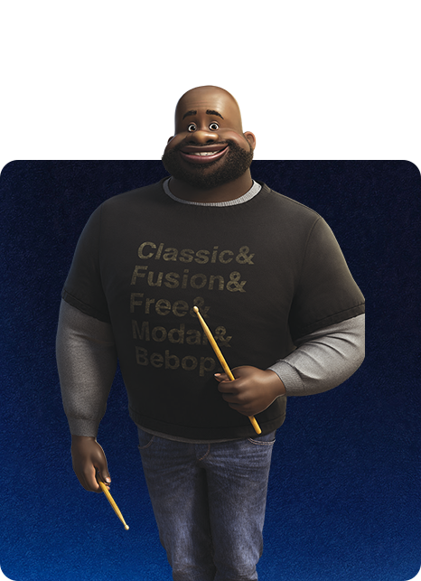
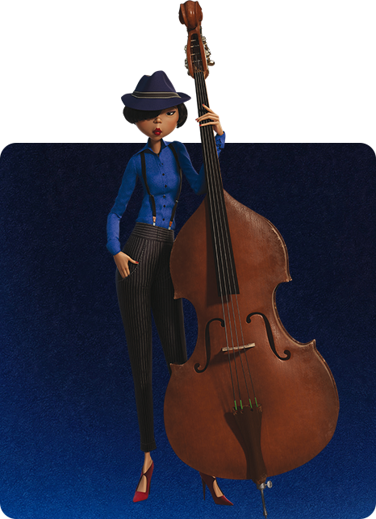
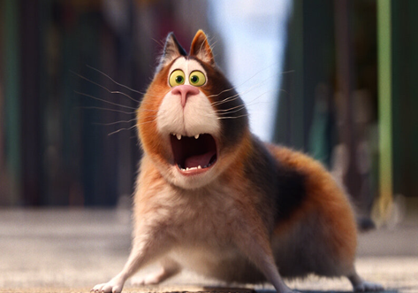
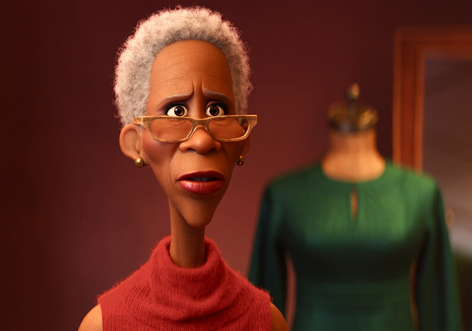

characters
Main Characters
Joe Gardner
“ I was born to play. ”A middle-school band teacher, Joe Gardner’s life hasn’t quite gone the way he’s expected. While teaching is a noble profession, his true passion is playing jazz, and he’s good. Joe believes he was born to play professionally, and though he’s 46 years old, he feels his opportunity to land a high-profile gig could come any day. Joe has an encyclopedic knowledge of jazz history, and even if his passion for music may have hampered his social life over the years, it hasn’t hampered his confidence. He lives alone, immersing himself in what he loves best: music.
22
“ Is all this living really worth dying for? ”22 is a precocious soul who has spent hundreds of years at The You Seminar, where new souls must meet several requirements before going to Earth. Like every soul before her, 22 has been through the Personality Pavilions, which explains her endearing sarcasm, quick wit and occasional moodiness. She’s met every requirement to go to Earth—except one. But no matter how many visits she makes to the Hall of Everything, no matter how many esteemed luminaries have mentored her, she can’t find the spark she needs to fulfill her requirements and make her way to Earth.
The Great Before
Terry
Terry is a peculiar extension of the team of The Great Before, charged with the singular duty of keeping track of the entrants to The Great Beyond. Each Jerry does their best to tolerate Terry, whose obsession with The Count can be burdensome—especially when it’s off. So, when Joe Gardner takes a detour to The Great Before, Terry is determined to make things right.
Moonwind
Moonwind is the product of a midlife awakening, which led his former self to change his name and his day job to seek a happier life. Moonwind is now a devoted sign twirler on a Manhattan street corner—an activity that brings him joy, putting him into the zone, which allows him to mentally and spiritually journey to a mystical place called The Astral Plane (near The Great Before), where he rescues lost souls from their uninspiring, stressful lives.
The Half Note & New York City
Filmmakers visited several barbershops to capture the look and feel of this symbolic locale, taking away several observations. “Barbershops tend to be very narrow since space in New York is at a premium,” says sets art director Paul Abadilla. “We also observed one thing that distinguishes barbers from hair stylists: when they work, their clients face away from the mirror—toward the waiting customers, which encourages conversation and heightens that sense of community.”
-

Curley
-

Dorothea Williams
-

Miho
Filmmakers sought to set “Soul” in a recognizable city to ground that part of the film. “As soon as we landed on jazz, we started to explore New York City,” says Docter. “Though jazz didn’t originate there, New York is the jazz capital of America. It is a center of culture, full of immigrants and influences from around the world. It’s a rich and vibrant place to feature a film.”
-

Mr. Mittens
-

libba Gardner
-
newsouls